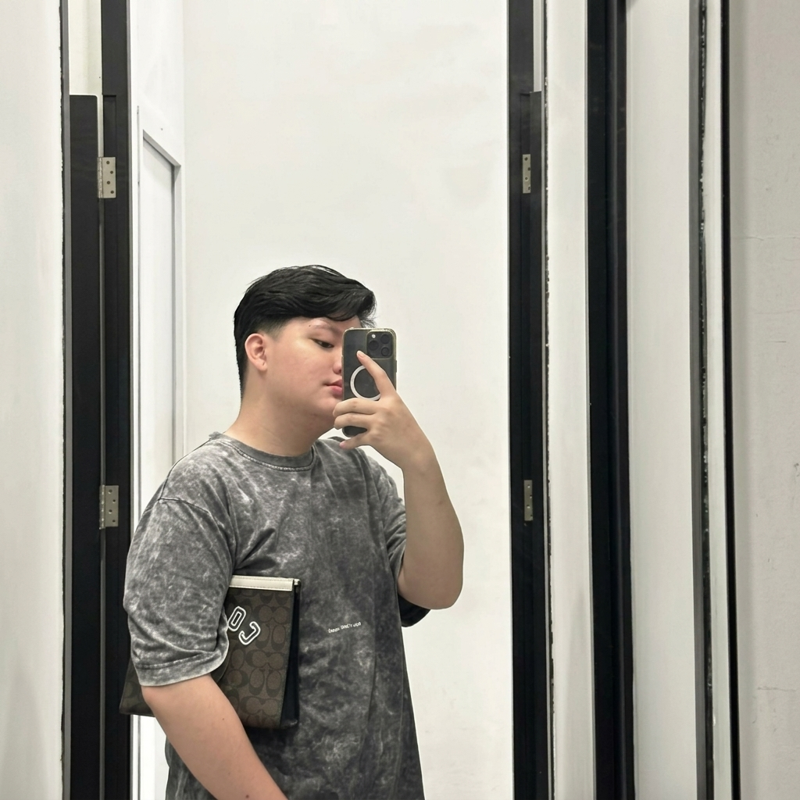

Menemukan "Titik" di Mana
Olahraga, Estetika, & Kopi Bertemu.
"Seorang pengusaha serta Ahli dalam bermain Biliard yang kebetulan memiliki Usaha Tempat Main biliard yang megah dengan point sell tambahannya yaitu di cafe, serta memiliki Cafe yang digabung dengan toko Vape dan memiliki beberapa cabang yaitu: Tebet, Vilnius, dan Otista. Kini terjun ke dalam dunia padel sebagai tantangan barunya karena kecintaannya pada eksplorasi dan tantangan baru."
Filosofi di Balik TiTik Padel
Berasal dari perpaduan kecintaan terhadap olahraga berakurasi tinggi dan apresiasi terhadap kultur specialty café Jakarta. TiTik Padel dirancang bukan sekadar sebagai fasilitas olahraga komersial yang bising, melainkan urban sanctuary dengan detail material kaca panoramic, turf empuk peredam benturan, dan sajian nutrisi café yang mendukung pemulihan stamina.
Ekosistem & Multi-Branch Presence
Dengan latar belakang ekspansi unit usaha café-vape terkemuka di Tebet, Vilnius, dan Otista, dedikasi terhadap kenyamanan ruang sosial dan standardisasi layanan premium diintegrasikan secara penuh ke dalam atmosfer TiTik Padel Arena.
Official Social Channels & Founder Contact
Terhubung langsung dengan tim TiTik Padel atau pantau aktivitas harian melalui media sosial resmi di bawah ini.